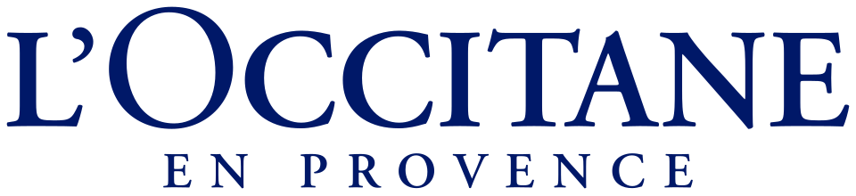

홈 > 브랜드 매거진 > 록시땅
록시땅
록시땅(L'OCCITANE)은 프랑스 프로방스의 천연 원료에서 영감을 받은 스킨·바디케어 브랜드이다.
산업 분야 뷰티·퍼스널케어 · 공개 등급 자료 기반 · 브랜드 평가 4.3 ★


한눈에 보는 브랜드
록시땅(L'OCCITANE)은 1976년 올리비에 보상이 프로방스에서 에센셜 오일을 만들어 시장에서 판매하며 시작됐다. 마르세유 전통 비누 제조법을 부활시켰고 시어버터 핸드크림 등으로 90개국 이상에서 사업을 전개한다.
브랜드 관점
록시땅 항목은 단순한 이름 목록이 아니라 뷰티·퍼스널케어 시장 안에서 어떤 역할을 하는지 읽기 위한 기준점입니다. 제품·서비스 범위, 유통 방식, 시각 아이덴티티, 시장 포지션을 함께 비교하면 같은 산업의 다른 브랜드와 차이가 선명해집니다.
시작과 성장
올리비에 보상이 1976년 프랑스 프로방스에서 시작한 천연 원료 기반 뷰티 브랜드다.
브랜드 아이덴티티
프로방스 자연주의를 담은 프리미엄 뷰티 브랜드이다.
제품과 서비스
화장품, 샤워 젤, 보습제, 세안제, 토너, 양초, 향수, 오드콜로뉴
현재 상태
타임라인
BI/CI 변천사
 BI/CI 아카이브BI/CI 아카이브
BI/CI 아카이브BI/CI 아카이브함께 읽을 브랜드
 뷰티·퍼스널케어 · 디렉토리올리브영
뷰티·퍼스널케어 · 디렉토리올리브영올리브영은 대한민국의 헬스앤뷰티 리테일 브랜드입니다. 화장품, 스킨케어, 건강식품, 퍼스널케어 상품을 큐레이션하며 K뷰티 유통의 대표 접점으로 자리 잡았습니다.
메디
메디힐
뷰티·퍼스널케어 · 디렉토리메디힐메디힐는 뷰티·퍼스널케어 브랜드로, 성분, 사용감, 패키지, 이미지 언어가 구매 판단에 직접 연결되는 영역입니다.
클리
클리오
뷰티·퍼스널케어 · 디렉토리클리오클리오는 뷰티·퍼스널케어 브랜드로, 성분, 사용감, 패키지, 이미지 언어가 구매 판단에 직접 연결되는 영역입니다.
토리
토리든
뷰티·퍼스널케어 · 디렉토리토리든토리든는 뷰티·퍼스널케어 브랜드로, 성분, 사용감, 패키지, 이미지 언어가 구매 판단에 직접 연결되는 영역입니다.
BE
BEA
기술·전자 · 편집 검수BEABEA는 1967년에 기록된 Airlines 계열의 브랜드 아이덴티티 사례입니다. FHK Henrion가 아이덴티티 작업의 디자이너로 기록되어 있습니다. 공개 섹션...
 뷰티·퍼스널케어 · 편집 검수도브
뷰티·퍼스널케어 · 편집 검수도브도브(Dove)는 유니레버가 1957년 출시한 비누·바디케어 퍼스널케어 브랜드이다.
 뷰티·퍼스널케어 · 자료 기반달바
뷰티·퍼스널케어 · 자료 기반달바달바(d'Alba)는 달바글로벌이 전개하는 대한민국의 프리미엄 비건 스킨케어 브랜드다. 2016년 론칭했으며 화이트 트러플 성분의 미스트 세럼으로 글로벌 베스트셀러를...
 뷰티·퍼스널케어 · 자료 기반더페이스샵
뷰티·퍼스널케어 · 자료 기반더페이스샵더페이스샵(The Face Shop)은 LG생활건강 계열의 자연주의 로드숍 화장품 브랜드로, 2003년 론칭했다.